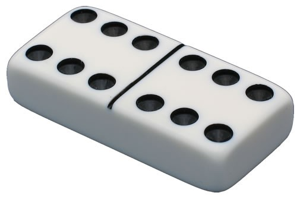

Page 17: Dice and Dominos
We’ve made lots of boxes in THREE. Now we’ll turn a box into a die (one of a set of dice) and into a domino. All this means is we take a white box and put some dots on the side. For dice, we put a different number of dots on each side. For a domino, we put two sets of dots on the top.
We’ve provided you with a simple texture with all 6 patterns of dots (1-6) in the file images/dice_texture.png. You are welcome to make a nicer texture file (don’t forget to include it in the repo when you hand it in!). If you make a texture, it should contain all 6 dot patterns.
Note: there should be one texture that has all the 6 patterns of dots. You make the faces of the objects be different by using different texture coordinates to get different parts of the texture onto each face.
For both the dice and dominoes, it is OK if they are simply boxes - as long as they have the right texture on them.
Note: you do need to make shapes for the dice and dominos. It may be easier to make them manually (creating a BufferGeometry with the mesh details) than to adapt the THREE primitives (the primitives give you limited control over the texture coordinates for each face).
In the text below, I refer to “numbers” of the side, but that means the number of dots you can see on the side.
Dice Exercise
Make two dice. This means defining a single class for dice and then making two instances. You should use the CS559 framework for this (so the new class is a subclass of GrObject). We’ve gotten things started with
05-17-01.js
Place the dice on the groundplane. They should be oriented so the numbers on top are different. This should be as simple as rotating one of the dice. We should be able to see that the dice have different numbers on each side (we can’t see the bottom).
view - look at the box and experiment with it
examine - look at the code for the box
edit - change the box's content
rubric - several steps are suggested in the rubric page - form elements on page in rubric
05-17-01.html 05-17-01.js
| Kind
Kind of rubric items: standard - expected from all students advanced - used to get a better grade creative - an opportunity to do something creative optional - not required, but encouraged |
Description | |
| standard | There are 2 dice | |
| standard | Dice have (correct) numbers on their sides | |
| creative | Rounded edges (Dice) |
Note: it is possible to do this assignment by using a THREE Box geometry and assigning a different material to each side. Don’t do this. The goal is to use texture coordinates to pull the right part of the texture (that contains all the numbers) to the right place. This means that you probably need to make your own Geometry that allows you to control the uv coordinates on each vertex for each face.
It is OK to make your dice be cubes. Real dice (usually) have rounded edges. Making rounded edges is hard (we’ll give you credit, but this is probably not worth it).
We’ve given you a texture file in the images directory.
Dominos Exercise
Make at least one domino. If you make only one domino, it should be a double 6.

It’s OK if your domino is just a box (twice as wide as it is deep, relatively thin). You need to have the dots on both sides of the top. The line between the sides is optional.
You can use the texture you used for the dice for this exercise. This is the recommended/expected way to do the assignment, but it is not required.
Note: you could try to do this by making a single texture for the entire top of the domino (with two sixes on one texture). Please don’t do this. The point of the exercise is for you to make geometry that has the correct UV values to pull the correct part of the texture onto each part of the object.
The requirement is to make one domino. A double six. If you’re ambitious, you can make a set of dominos (up to 6-6). Here’s what a set of dominos looks like in a drawing. You could even arrange the dominos on the table in a legal way (numbers have to match - if you don’t know the rules for dominos, don’t worry).
It is OK if your domino is a white box except for the black dots. As with the dice, real dominos usually have rounded edges. Don’t worry about it (there are more interesting advanced points on the next pages).
There is a set of files 05-17-02.html and
05-17-02.js
for you to put your work into. You should use the CS559 Framework, and define a new class for dominos. If you really wanted to do it right, the constructor could take 2 numbers (one for the number of dots to appear on each side). The preferred way to implement this is to define your own BufferGeometry, where the top of the box is made of at least 4 triangles, with texture coordinates that put the right numbers where they should go.
view - look at the box and experiment with it
examine - look at the code for the box
edit - change the box's content
rubric - several steps are suggested in the rubric page - form elements on page in rubric
05-17-02.html 05-17-02.js
| Kind
Kind of rubric items: standard - expected from all students advanced - used to get a better grade creative - an opportunity to do something creative optional - not required, but encouraged |
Description | |
| standard | At least one domino | |
| standard | At least one double 6 | |
| advanced | More dominos (different numbers, legal configuration) | |
| creative | Rounded edges (Domino) |
You can make rounded edges on your dominos and place more than 4 dominos on the table in a legal arrangement (obey the rules of dominos).
Next: Page 18 - Real Texturing